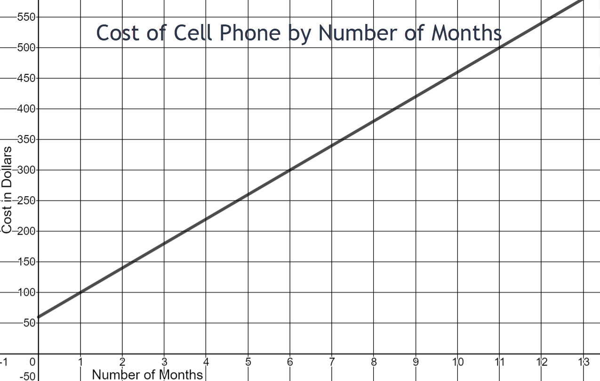

Linear Modeling and Logic Unit
4.3 Writing Equations of Lines
Introduction
On August 5, 2010, a gold-and-copper mine collapsed in Chile, trapping 33 miners underground. Rescuers used a drilling rig to reach the miners under the earth’s surface. An escape capsule carried each miner up the shaft at a constant rate as shown in the graph.
- At what underground depth were the miners trapped?
- How long has a miner been ascending in the escape capsule when he reaches a depth of 300 feet?
- How long did it take to bring each miner to the surface?
- At what average rate did the escape capsule carry each miner up the shaft?
- Write an expression for the depth of the miner during his rescue with respect to time ascending.
2050 feet underground
580 seconds
680 seconds
\( \begin{equation} \frac{-300-0}{580-680}=\frac{-300}{-100}= \text{ 3 feet per second} \end{equation} \)
y = 3x - 2050
Group Assignment
- Use the graph “People With Health Insurance,” which estimates the U.S. population with health insurance in the given years, to answer the following questions.
- How many people had health insurance in 1990?
- How many people had health insurance in 1991?
- At what rate is the number of people with health insurance increasing each year?
- According to the graph, how many people would you expect to have had health insurance in 1988?
- According to the graph, how many people would you expect to have had health insurance in 2014?
- The actual number of people in the U.S. with health insurance in 2014 was about 276 million. Why do you think this differs from your estimate in question (e)?
214 million
216 million
2 million per year
210 million
262 million
The function is probably not a linear relationship.
- Use the graph “Josh’s Car Trip” to answer the following questions.

- Is Josh traveling away from home or towards his home during his trip?
- How many miles long is Josh’s trip?
- How long does Josh’s trip take?
- What is Josh’s speed during his trip?
- At this rate, how long would it take Josh to complete a 3300 miles trek across the United States? If he could only drive 8 hours a day, how many days would it take him?
toward home
160 miles
4 hours
40 mph
82.5 hours which is 10.3 days when he is driving 8 hours per day.
- Use the graph “Demand Curve” to answer the following questions.

- When the cost of the product is $100, how many units are sold?
- When the cost of the product is $200, how many units are sold?
- When the cost of the product is $300, how many units are sold?
- Is demand increasing or decreasing with respect to cost?
- What is the rate of change for units sold for every dollar increase?
- Which brings in the most money: selling the product for $100, $200, or $300? (Take into account how many units are sold at each price)
- At what cost does the demand hit zero?
50,000 units
30,000 units
10,000 units
decreasing
-200 units per dollar
Selling the product for $200 brings in the most money.
$350
- Use the graph “Cost of Cell Phone by Number of Months” to answer the following questions.

- What two variable quantities are shown on the graph?
- Which is the dependent quantity?
- What is the domain as shown on the graph?
- What is the range as shown on the graph?
- What is the initial cost of the cell phone (at month zero)? What might this amount represent?
- What is the cost of the cell phone at 12 months?
- What is the cost of the cell phone at 6 months?
- How much does the person pay towards his cell phone per month?
- Write an equation for the cost of the cell phone based on number of months?
number of months and cost of the cell phone
cost of the cell phone
\( \begin{equation} 0 \leq x \leq 13 \end{equation} \)
\(\begin{equation} 0 \leq y \leq 550 \end{equation}\)
$60
$540
$300
$40
y = 40x + 60
-
Use the graph “Green Cab Vs Blue Cab” to answer the following questions.

- What two variable quantities are shown on the graph?
- What are the units for the dependent quantity?
- If your destination is 10 miles away, which cab would you call?
- If your destination is 2 miles away, which cab would you call?
- At what mileage does cost not matter when choosing a cab?
- How much does the green cab charge per mile?
- Write an equation for the cost of the green cab.
- How much does the blue cab charge per mile?
- Write an equation for the cost of the blue cab.
number of miles and total cost
dollars
The blue cab
The green cab
3.3 miles
$1.80
y = 1.80x + 2
$0.90
y = 0.90x + 5
- Use the graph “Length of Spring by Weight Attached” to answer the following questions.

- What is the domain of the length of spring by weight attached?
- What is the range of the length of spring by weight attached?
- What is the initial length of the spring?
- How much more does the spring stretch with 5 pounds of weight compared to 2 pounds of weigh?
- How much does the spring stretch per additional pound of weight added?
- Write an equation for the total length of the spring with respect to weight attached.
- Predict the length of the spring when 8 pounds are attached to it.
\(\begin{equation} 0 \leq x \leq 6 \end{equation}\)
\(\begin{equation} 0 \leq y \leq 30 \end{equation}\)
8 inches
9 inches more
3 inches per pound
y = 3x + 8
32 inches
- Use the graph “Money Earned” to answer the following questions.
- How much does the player earn per year?
- If the linear trend were extended, how much would the player earn at 0 years? Does this make sense?
- Write an equation for the total money earned by the player based on years played.
$20 million
According to the graph, the player would earn -$10 million, which does not make sense.
y = 2x - 10